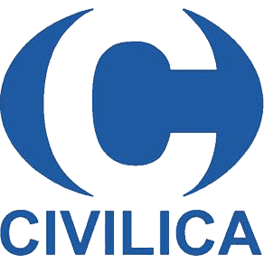

وزارت فرهنگ و ارشاد اسلامی
مرجع رسمی صدور مجوز نشریه
اطلاعات رسمی و قابل راستیآزمایی درباره وضعیت نمایهسازی نشریه.
مرجع رسمی صدور مجوز نشریه

صفحه رسمی ثبت و گواهی رسانه
نمایه و دسترسی به محتوای نشریات

پایگاه نمایهسازی و دسترسی علمی
پایگاه نمایهسازی علمی

خدمت جستوجو و نمایهسازی علمی
منبع و شبکه دسترسی آزاد
حضور و دسترسی برخط

نمایه

مجوز حق نشر نشریه
این فهرست بر پایه سامانهها، پایگاهها و مراجع معرفیشده در فوتر رسمی وبسایت تنظیم شده است. پیوند هر مورد، در صورت وجود، به صفحه یا وبسایت مربوط هدایت میشود.